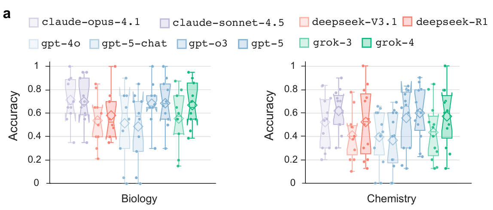
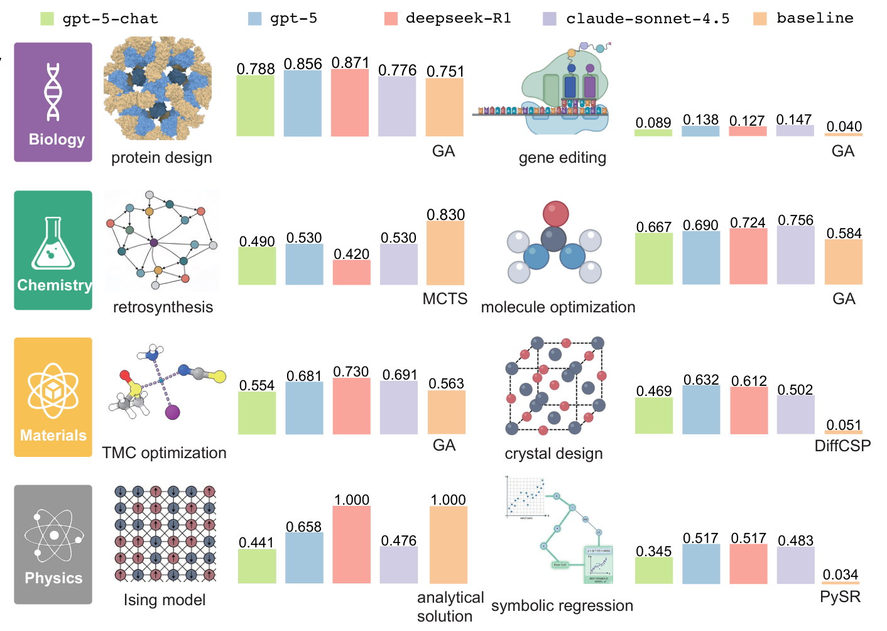
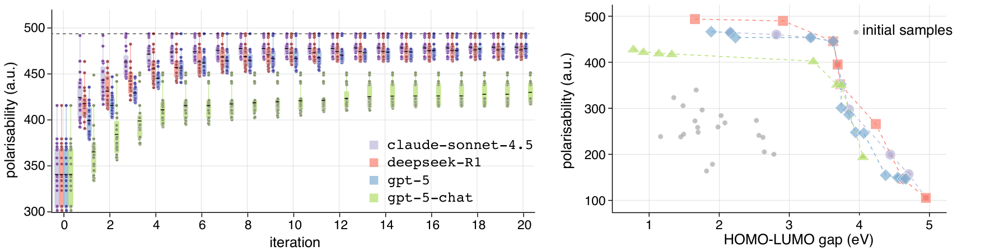

如果一个模型能答对很多高难度科学题，我们是否就可以把研究交给它？这篇论文提出 Scientific Discovery Evaluation（SDE），把研究场景中的答题表现与多轮项目表现放在一起评价。沿着这套设计，我们也能重新思考：选择科研模型时，究竟应该相信什么证据。
一、课题解读：怎样评价 AI 的科研能力
设想我们要寻找一种性能更好的材料。研究过程中，既需要判断已有数据意味着什么，也需要提出下一批候选、获得计算或实验反馈，再调整搜索方向。某个知识问题答对了，只说明其中一个环节有了支持。
科研能力评测关注的是：模型能否在具体研究条件下作出有用的判断，并利用反馈推动任务。 评价对象因此包含局部能力与连续行动：前者帮助定位薄弱环节，后者检查这些能力组合后能否完成工作。
这个领域需要解决的核心困难，是让容易测量的分数与我们真正关心的研究表现建立联系。题目正确率、候选方案的有效性和最终项目收益，分别提供不同层次的证据。
二、相关文献解读：从科学问答走向研究任务
已有评测分别从知识、可执行任务和研究复现切入。
| 工作 | 主要评价什么 | 为本文提供的观察角度 |
|---|---|---|
| GPQA | 专家编写的高难度科学选择题 | 模型具备哪些科学知识与解题能力？ |
| ScienceAgentBench | 来自真实论文的数据驱动任务，检查程序、执行结果与成本 | 模型能否把要求落实为可执行产物？ |
| PaperBench | 从零复现机器学习论文，以分层准则评价完成情况 | 多环节研究工作怎样被拆解与评分？ |
SDE 进一步把“研究项目—研究场景—具体题目”联系起来，并在项目中加入候选生成、计算验证和结果反馈。我们关注的是：这种联系能否解释，为什么一个模型答题较强，却未必在研究项目中领先。
三、研究问题解读：哪些能力值得分别检查
我们将论文的研究目标归纳为三个问题：
- 贴近研究场景的题目，能否揭示通用分数掩盖的能力差异？ 需要把大领域继续拆成具体研究环节。
- 增加推理投入，能否稳定改善这些能力？ 需要检查各场景收益，而不是只看总分。
- 题目答得好，是否意味着项目做得好？ 需要让模型真正进入多轮搜索，并比较两个层次的结果。
这三个问题分别对应后面的场景画像、推理投入比较，以及题目与项目的对照。本文基于 2026 年 5 月 8 日修订的 v2，下文模型名称和结果均指论文当时的实验设置。
四、方法解读：从研究项目到两层评价
SDE 的方法是一套评测设计。下面按数据构建、题目评价、项目评价的顺序理解。
第一步：把项目拆成可以复用的研究场景
作者组织领域专家，从真实研究兴趣出发确定场景，再通过公开数据、计算流程和人工编写形成题目，并进行审核。一个“场景”是能参与多个项目的研究单元，例如反应预测、谱图解读或分子性质判断。
例如，逆合成是从目标分子倒推原料与反应路线。完成多步路线规划，会涉及单步逆合成、反应机理和正向反应预测。分别检查这些场景，才能进一步判断项目失败可能发生在哪里。最终题集覆盖生物、化学、材料和物理四个领域，共 43 个场景、1,125 道题。
第二步：在题目层建立能力画像
模型回答场景内的问题，再按精确匹配、数值容差或相似度等任务规则评分。作者既比较整体表现，也保留场景层结果；另改变推理投入，检查改善发生在哪些环节。
这里对应前两个问题：模型在什么场景可靠，增加推理又帮助了哪些场景。需要注意，这一层仍然主要在评价题目回答。
第三步：在项目层运行“假设—验证—观察”循环
作者构建 sde-harness，在八类项目中让模型提出候选假设，由计算评价器或模拟器检查，再把结果反馈给下一轮。项目涉及分子、蛋白质、晶体、方程等不同搜索空间，并采用演化搜索作为共同框架：保留表现较好的候选，再据此生成新候选，同时允许任务所需的适配。
以过渡金属配合物（TMC）优化为例：模型获得候选配体、约束、目标和初始样本，随后提出新结构；结构经过有效性检查及性质计算，结果进入下一轮上下文。评价关注的是候选怎样随反馈改善，而不只是单次答案是否正确。
这一步回应第三个问题。它也划定了边界：这里评价的是模型与给定搜索框架、计算工具结合后的表现，不能直接等同于完整的真实实验室科研能力。方法见 PDF 第 15—18 页。
五、实验设计与结果：围绕三个问题看证据
问题一：场景拆解揭示了什么差异
作者按领域汇总场景分数，同时保留每个场景的表现。下图以生物、化学两个领域为例，每个点代表一个场景；同一模型的点分布较散，说明领域平均数无法充分描述它的能力。

一个具体例子是：论文中的 GPT-5 在逆合成场景得分为 0.85，在核磁共振（NMR）谱图到结构的场景中为 0.23。我们会据此判断，选型需要进一步落到任务环节；这组差异本身还不能解释错误的具体原因。
问题二：更多推理是否稳定带来收益
论文比较 GPT-5 在不同推理投入下的表现。下面摘录 medium 与 high 两档的领域结果：
| 领域 | medium | high | 差值（百分点） |
|---|---|---|---|
| 生物 | 70% | 69% | −1 |
| 化学 | 53% | 60% | +7 |
| 材料 | 74% | 75% | +1 |
| 物理 | 58% | 60% | +2 |
数据来源：v2 PDF 第 7 页正文，相关曲线见 Figure 3a。此处是同一模型不同推理设置的比较。
结果更适合解释为“收益依赖领域和设置”。化学在这一比较中仍提高了 7 个百分点，因此不能把所有领域概括成“增加推理已经无用”；同时，也不能默认更高投入在每个领域都更好。
问题三：题目表现能否预测项目表现
项目实验让模型进入多轮验证流程，并与各任务的传统方法比较。原图中每个项目采用自身的归一化指标，适合看项目内部差异，不宜把跨项目柱高直接解释成统一科研能力分数。

论文展示了两个值得对照的现象。
知识判断不强，项目仍可能表现良好。 在 TMC 相关性质题上，各模型并不突出；但三个推理模型能够通过计算反馈，在限定的候选空间中找到高极化率结构。附录还用五组不同初始样本检查了这一结果。

局部题目较强，也可能在多步规划中失效。 在逆合成项目中，模型还需要生成完整有效的多步路线。论文分析了无效分子表示和反应有效性等失败，并报告这些模型未超过相应传统规划方法。
我们的理解是：局部正确率、约束满足和利用反馈搜索，分别影响项目表现。上述案例支持把它们分开检查，尚不足以把项目成功完全归因于模型已掌握相应科学机制。结果讨论见 PDF 第 11—12 页；TMC 设置见第 49 页。
六、我们自己的思考
课题思考：这个领域在研究什么
这个领域在研究评价指标与真实科研任务之间的关系。我们最关注的是：一个分数能否帮助判断模型适合承担哪个环节，以及何时需要工具或其他模型补充。局部题目有助于诊断，连续项目有助于检查组合后的效果，两层评价应当相互验证。
局限问题思考：目前还存在哪些问题
- 评价范围有限： 四个领域、八类项目仍难代表广泛科研；计算评价器给出的收益，与真实实验中的价值也需要继续连接。
- 结果归因困难： 项目表现同时受模型、提示、搜索规则和预算影响。当前设置中的排名，未必适用于其他研究流程。
- 场景到项目的映射仍需验证： 相关题目可以提供线索，但还需要更直接的实验，确认某个局部能力确实决定了项目中的哪类失败。
解决方案思考：这些问题有哪些解决方向
我们会优先尝试三个对应方向：
- 扩展验证层次： 在更多研究主题上建立同样的两层评价，并把部分计算候选交给独立实验验证，检查指标是否对应实际收益。
- 控制模型之外的变量： 在相近预算下交叉比较模型、提示和搜索策略，报告多次运行的波动与单位成本收益。
- 干预具体失败环节： 对多步路线加入结构与反应校验，比较校验前后的项目成功率；若失败显著减少，才能更有依据地定位瓶颈。
这些方向是我们的后续设想。对实际研究而言，我们更愿意先明确任务中的关键环节，再检查模型在这些环节和完整流程中的证据，而非仅用一个通用分数决定是否采用它。
阅读依据：Evaluating Large Language Models in Scientific Discovery，arXiv v2。插图摘录自原论文对应子图，仅裁去外围内容，未改绘或更改数据，版权归 Zhangde Song 等原作者所有。表格为原文数据摘录；延伸判断与验证方向属于本文分析。